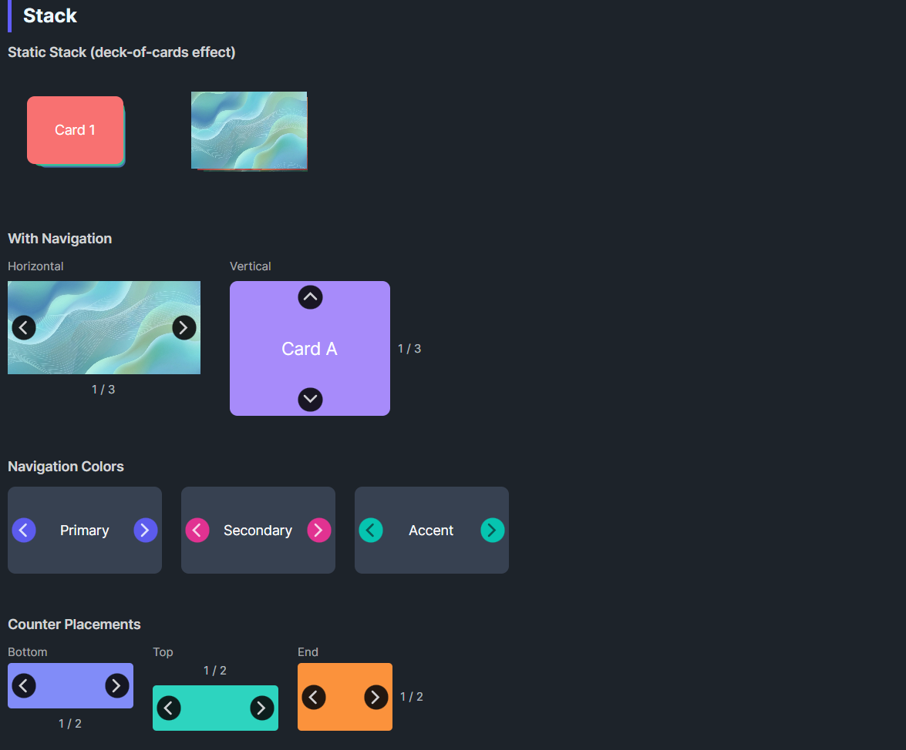

DaisyStack displays children in a stacked arrangement with optional navigation. It inherits from ItemsControl so children overlap in a Grid panel. In static mode (default), theme styles apply Z-index, translation, scale, and opacity per child order creating a deck-of-cards effect. When navigation is enabled, only one item is visible at a time with animated transitions.
| Property | Type | Default | Description |
|---|---|---|---|
ShowNavigation |
bool |
false |
Shows prev/next arrows; only one item visible at a time |
NavigationPlacement |
DaisyStackNavigation |
Horizontal |
Arrow direction: Horizontal (left/right) or Vertical (up/down) |
NavigationColor |
DaisyColor |
Default |
Color for navigation buttons (Primary, Secondary, Accent, etc.) |
ShowCounter |
bool |
false |
Shows "1 / 5" counter label |
CounterPlacement |
DaisyPlacement |
Bottom |
Counter position: Top, Bottom, Start, End |
SelectedIndex |
int |
0 |
Currently visible item index (0-based) |
TransitionDuration |
TimeSpan |
300ms |
Animation duration for navigation |
StackOpacity |
double |
0.6 |
Opacity of background items in static mode |
Horizontal - Left/Right arrowsVertical - Up/Down arrowsTop - Counter above the stackBottom - Counter below the stack (default)Start - Counter to the leftEnd - Counter to the right<controls:DaisyStack Width="100" Height="100">
<Border Background="#F87171" CornerRadius="8" />
<Border Background="#34D399" CornerRadius="8" />
<Border Background="#60A5FA" CornerRadius="8" />
</controls:DaisyStack><controls:DaisyStack Width="220" Height="140"
ShowNavigation="True"
ShowCounter="True">
<Border Background="#F87171" CornerRadius="8">
<TextBlock Text="Slide 1" HorizontalAlignment="Center" VerticalAlignment="Center" Foreground="White"/>
</Border>
<Border Background="#34D399" CornerRadius="8">
<TextBlock Text="Slide 2" HorizontalAlignment="Center" VerticalAlignment="Center" Foreground="White"/>
</Border>
<Border Background="#60A5FA" CornerRadius="8">
<TextBlock Text="Slide 3" HorizontalAlignment="Center" VerticalAlignment="Center" Foreground="White"/>
</Border>
</controls:DaisyStack><controls:DaisyStack Width="220" Height="160"
ShowNavigation="True"
ShowCounter="True"
NavigationPlacement="Vertical"
CounterPlacement="End">
<Border Background="#A78BFA" CornerRadius="8">
<TextBlock Text="Card A" HorizontalAlignment="Center" VerticalAlignment="Center" Foreground="White"/>
</Border>
<Border Background="#F472B6" CornerRadius="8">
<TextBlock Text="Card B" HorizontalAlignment="Center" VerticalAlignment="Center" Foreground="White"/>
</Border>
</controls:DaisyStack><controls:DaisyStack Width="180" Height="100"
ShowNavigation="True"
NavigationColor="Primary">
<Border Background="{ThemeResource DaisyBase300Brush}" CornerRadius="8"/>
<Border Background="{ThemeResource DaisyBase200Brush}" CornerRadius="8"/>
</controls:DaisyStack>// Navigate to next/previous
myStack.Next();
myStack.Previous();
// Jump to specific index
myStack.SelectedIndex = 2;ShowNavigation="True" for interactive card browsingNavigationColor to match your app's themeDaisyCarousel instead (has more carousel-specific features)SelectedIndex property can be bound for MVVM scenarios